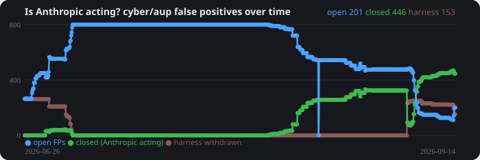

ClAudit
Catches false-positive Claude Code safety and policy blocks, scrubs the PII, and files clean GitHub issues on anthropics/claude-code.
Reports across every ClAudit user
Counted hourly from the issue list. "Closed by Anthropic" counts only cyber/AUP reports the maintainers or their bots closed. The withdrawn harness reports are ClAudit's own cleanup and are kept out of that number.
Open, closed, and withdrawn over time

Since 2026-08-09 the inactivity bot on anthropics/claude-code has closed hundreds of untriaged reports as "not planned". Authors cannot reopen an issue someone else closed, so the swept reports are collected in umbrella issue #86940 with their request IDs.
Will Anthropic fix it?
Loading the live tally…
One vote per GitHub account: react 👍 (Anthropic will fix it), 👎 (Claude Code stays broken), or 👀 (too soon to tell) on the pinned issue, or vote from inside the app.
Run it
git clone https://github.com/sworrl/ClAudit.git && cd ClAudit
pip install ".[gui]" # claudit, claudit-watch, claudit-gui
gh auth login # the GitHub CLI must be signed in
claudit-gui # tray app: notify-only until you turn on auto-filePython 3.9 or newer, the gh CLI, and PyQt6 for the tray app. Linux, macOS, and Windows. Nothing posts until you say so, and every report is scrubbed with regex, your own denylist, and an optional LLM pass first.
- README: how it works, PII protection, every flag
- Releases and the changelog
- Help wanted: packaging, Windows and macOS testing, new block signatures
sworrl/ClAudit · GPL-3.0 ·